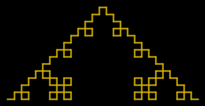

by Drew Olson
When I learned about fractals in high school math class, I immediately found them fascinating. For those of you unfamiliar with the concept, the definition from Wikipedia is as follows: a fractal is "a rough or fragmented geometric shape that can be subdivided in parts, each of which is (at least approximately) a reduced-size copy of the whole".
At the end of the unit in which we were taught them, the fractal below was a test question. In subsequent years, I began drawing it freehand to higher and higher levels. The details and patterns that emerge are fascinating.
The goal is to create a ruby program which takes the level as an argument and then draws the fractal shown below to the specified level. The fractal is created by drawing the first level, then repeating the pattern such that each base piece is replaced with the fractal from the higher level. Thus, to move from level 1 to level 2, we replace each line with the shape at level 1. Notice that the position changes as well, meaning if the line is vertical we replace it with a vertically positioned shape of level 1 (right and left facing also matter). I have shown the first 3 levels below (including the base component at level 0). Feel free to use the console for output or get fancy with RMagick or something similar.
_ <-- Level 0
_
_| |_ <-- Level 1
_
_| |_
_| |_ <-- Level 2
_|_ _|_
_| |_| |_| |_
_
_| |_
_| |_
_|_ _|_
_| |_| |_| |_
_| |_
_|_ _|_
_| |_| |_| |_ <-- Level 3
_| |_
_|_ _|_
_| |_|_ _ _ _|_| |_
_| |_|_|_| |_|_|_| |_
_|_ _|_|_ _|_|_ _|_
_| |_| |_| |_| |_| |_| |_| |_
Quiz Summary
I lied to Morton Goldberg.
I told him I thought a turtle graphics solution would be a unique approach not many people would try. Boy was I wrong! That turns out to be the easiest way to attack this problem and the solvers knew that a lot better than I did.
The solutions are very diverse and I had a hard time picking what to show. Some solutions allowed you to customize the fractal drawn. Others offered various forms of output, including some pretty pictures. Jesse Merriman's solution did it all and I do recommend having a peek at that code.

For this summary though, I'm going to show Donald Ball's solution. I think it captured the technique most people used well and it also included a unique form of output. Let's take a look:
if level == 1
list
else
instructions(level-1, list.map do |item|
case item
when :forward
[:forward, :left, :forward, :right,
:forward, :right, :forward, :left, :forward]
else item
end
end.flatten)
end
end
# ...
This method sums up the shortcuts pretty much everyone used. First, we have turtle graphics style drawing. If we assume a turtle starts facing east, the Array in the middle of this method contains the instructions to draw level one of the fractal. It's much easier to work with a format like this than it is to edit a large String or Array of paths.
The other shortcut was a simplification of the drawing pattern. It turns out that just replacing all occurrences of the level zero pattern with the level one pattern is all it takes to transform any level of the pattern into the next level.
Knowing that, this method is a recursive implementation of those shortcuts. It begins with the level zero pattern and for each level it performs the replacement I mentioned earlier. The end result will be a long path for drawing the entire target level.
The next step is to convert those directions into and collection of points that could be plotted:
DIRECTIONS = [:east, :south, :west, :north]
def plot(instructions)
p = [0, 0]
points = [p]
direction = :east
instructions.each do |item|
case item
when :forward
p = p.dup
case direction
when :east: p[0] += 1
when :south: p[1] -= 1
when :west: p[0] -= 1
when :north: p[1] += 1
end
points << p
when :left
direction = DIRECTIONS[(DIRECTIONS.index(direction) - 1) % 4]
when :right
direction = DIRECTIONS[(DIRECTIONS.index(direction) + 1) % 4]
end
end
points
end
# ...
This method generates a collection of points from the path of :forward, :left, and :right instructions. It works by tracking the direction the turtle is currently facing and moving by incrementing the points as indicated for that direction. Turns simply change the direction.
Now, it's not so easy to flatten the coordinates into an ASCII art string and we really want to see these fractals as an image anyway, so Donald opted for an unusual means of output. Donald's program builds a web page that can draw the fractal (as long as it is displayed in Safari or Firefox). Here's the code:
def to_html(points, width=600, height=400)
length = [width/points.map {|p| p[0]}.max,
height/points.map {|p| p[1]}.max].min
points.map! {|p| p.map {|x| x*length}}
s = '<!DOCTYPE html PUBLIC "-//W3C//DTD XHTML 1.0 Strict//EN" '
s << '"http://www.w3.org/TR/xhtml1/DTD/xhtml1-strict.dtd">'
s << "\n<html><head>"
s << "<script type='text/javascript'>\n"
s << "<!--\n"
s << "function draw() {\n"
s << "var context = document.getElementById('canvas').getContext('2d');\n"
s << "context.lineWidth = 1;\n"
s << "context.strokeStyle = '#ff0000';\n"
s << "context.beginPath();\n"
p = points.shift
s << "context.moveTo(#{p[0]},#{p[1]});\n"
points.each {|p| s << "context.lineTo(#{p[0]}, #{p[1]});\n" }
s << "context.stroke();\n"
s << "}\n"
s << "//-->\n"
s << "</script>"
s << "<body onload='draw()'>"
s << "<canvas id='canvas' width='#{width}' height='#{height}'></canvas>"
s << "</body></html>"
s
end
# ...
The work here is pretty simple. First the code finds a good line width for the fractal by measuring how much space the canvas has for width and height. All the points are then scaled by that length. This is done with simple multiplication since the scale was previously one.
The output is some HTML preamble followed by a JavaScript section that does the real work. The prepares a drawing context and then literally just plays connect the dots with the points. There's a little more HTML to close things up and invoke the drawing routine and, presto, we have a self drawing web page.
As written, this code draws fractals upside down (in comparison to the quiz examples). If you want to flip them over, just change to two #{p[1]} interpolations in the JavaScript to #{height - p[1]}.
We're just short the code to kick-off the process:
if $0 == __FILE__
puts to_html(plot(instructions(ARGV[0].to_i))) if ARGV.length == 1
end
As usual, this code is trivial. Generate instructions() for the requested lever, hand those off to plot() to get the coordinates, and filter those through to_html() to get a printable web page.
My thanks to all who showed me just how powerful turtle graphics can be. I should have never doubted.
Tomorrow we will give a little time to a problem that has been making the rounds in the hope of making ourselves more employable...